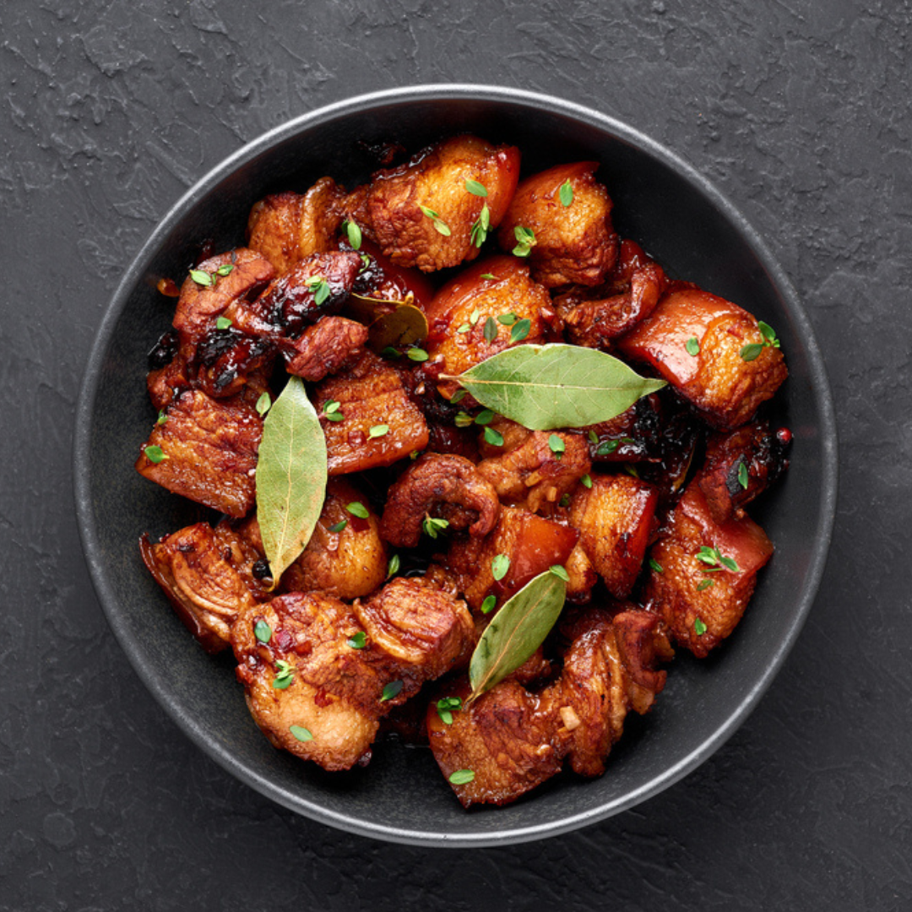

Adobo Recipe
| Ingredients |
Size |
| Pork |
1 Pound |
| Soy Sauce |
1/2 Cup |
| Vinegar |
1/4 Cup |
| Garlic |
2 Cloves |
| Black Pepper |
1/2 Teaspoon |
| Bayleaf |
1 pc |
| Brown Sugar |
1 Tablespoon |
| Cooking Oil |
1 Tablespoon |
Instructions
-
Marinate: Follow the same marinating steps as the
chicken adobo recipe.
-
Cook: Heat the cooking oil in a large skillet or pot
over medium-high heat. Add the marinated pork cubes and cook until
browned on all sides.
-
Simmer: Reduce heat to low and add the marinade to the
pot. Bring to a simmer and cover. Cook for 30-45 minutes, or until the
pork is tender and the sauce has thickened.
-
Finish: Remove the pot from the heat and discard the
bay leaf. Let the adobo rest for a few minutes before serving.
Tips
-
Pork cut:
- For a more tender pork adobo, use pork shoulder or belly.
-
Cooking time:
-
Adjust the cooking time based on the cut of pork and your preferred
level of tenderness.
-
Variations:
-
You can also add vegetables like potatoes, carrots, or bell peppers
to your pork adobo.